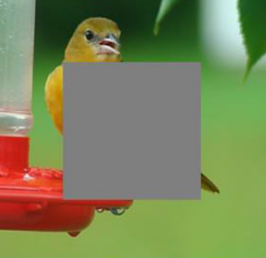
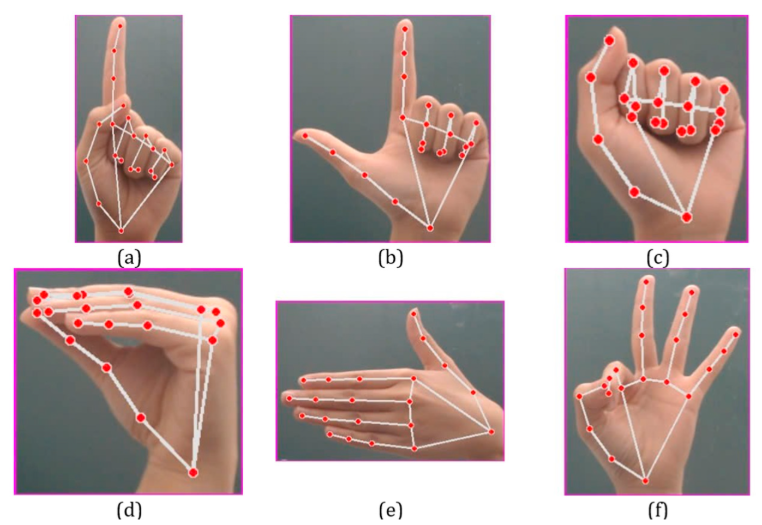

News
News
- [08/2025]: Joined Prof. Amitava Das' Research Group (BITS Pilani Goa) as a Research Intern.
- [05/2025]: Joined I3D Lab, IISc as a Research Intern.
- [04/2025]: Displayed our project, "The Brush of Spells: Text-Guided Image Inpainting" at the NITK Project Exposition 2025.
|
|
Research
I'm interested in Computer Vision, Generative Modeling and Natural Language Processing.
|
|
|
Improving MR Interaction through GenAI
Yashaswi Sinha,
Atharva Atul Rege,
Yash Kumar Sahu,
Rubini M,
Himanshu Vishwakarma,
Pradipta Biswas
ACM IUI, 2026 (Under Review)
project page
Developed a diffusion-based framework for parametric editing of material properties
of foreground objects in images, enabling fine-grained control over visual attributes. Additionally,
provide seamless compositing onto diverse backgrounds using advanced diffusion-based
methods.
|
|

|
The Brush of Spells: Text-Guided Image Inpainting
Source Code
/
Project Page
Implemented MMFL: Multimodal Fusion Learning for Text-Guided Image Inpainting using Generative Adversarial Networks (GANs),
leveraging a multimodal architecture to inpaint images based on textual prompts.
|
|

|
Vision Kinect
Source Code
/
Project Page
Developed a YOLO-based hand gesture recognition system for completely touchless, gesture-controlled interactive Tetris gameplay,
demonstrating applications in Human-Computer Interaction (HCI).
|
|
|
FinBot-AI
Source Code
/
Developed a generative AI-powered finance chatbot leveraging OpenAI’s GPT-4 and LangChain, streamlining complex
financial queries with accurate, context-aware responses and Retrieval-Augmented Generation. Built an interactive web
interface with Streamlit to enable instant customer support and personalized financial advice.
|
|
{kind=link}